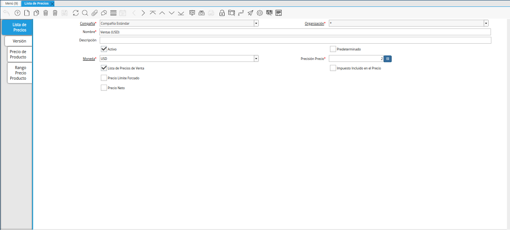
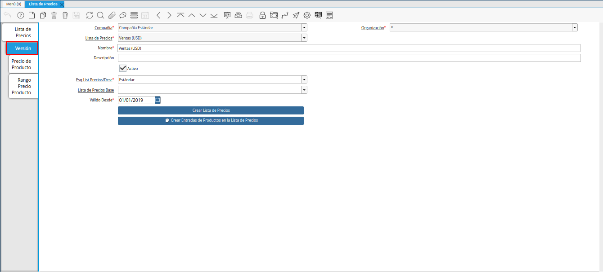
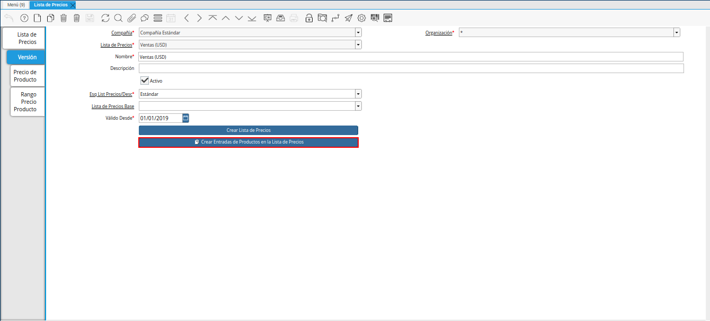
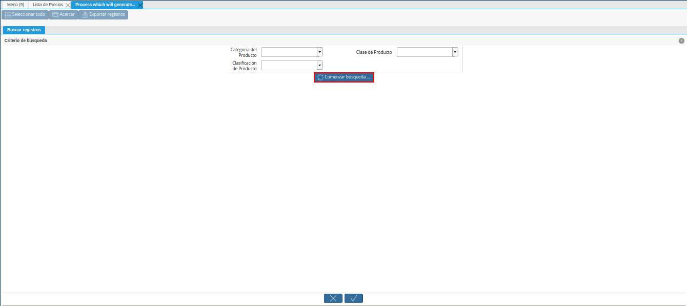
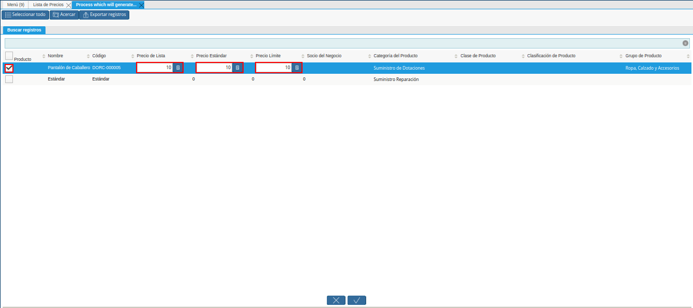
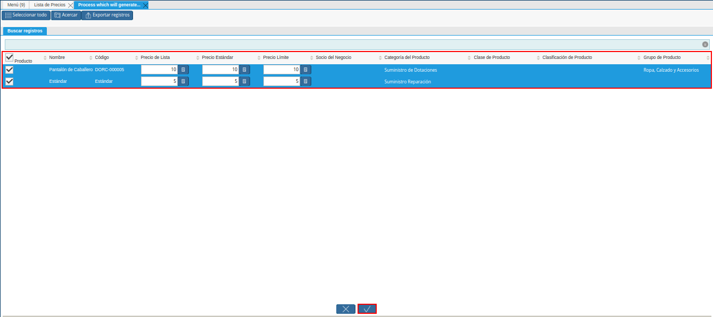
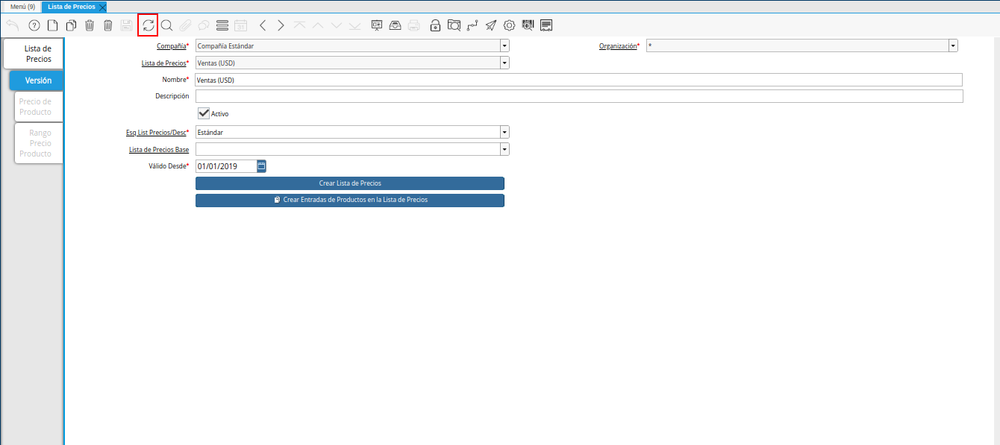
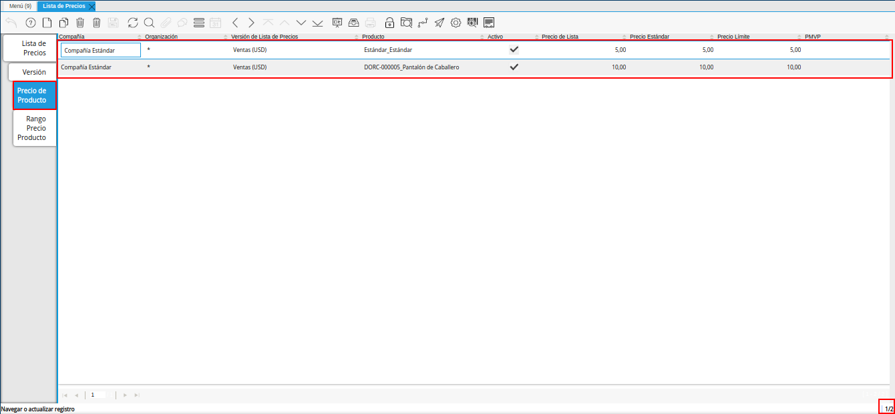

Crear Entradas de Productos en Lista de Precios¶
Ubique y seleccione en el menú de ADempiere, la carpeta “Gestión de Materiales”, luego seleccione la carpeta “Reglas de Gestión de Materiales”, por último seleccione la ventana “Lista de Precios”.
Imagen 1. Menú de ADempiere

Podrá visualizar la ventana “Lista de Precios”, donde debe ubicar el registro de la lista de precios a utilizar.

Imagen 2. Ventana Lista de Precios
Seleccione la pestaña “Versión”, para establecer la lista de precios de los productos.

Imagen 3. Pestaña Versión
Seleccione ĺa opción “Crear Entradas de Productos en Lista de Precios”, para establecer los precios de los productos desde el proceso.

Imagen 4. Opción Crear Entradas de Productos en Lista de Precios
También puede acceder al proceso, seleccionando la opción “Crear Entradas de Productos en Lista de Precios” desplegada del icono “Proceso ubicado en la barra de herramientas de ADempiere.
Imagem 5. Opción Crear Entradas de Productos en Lista de Precios desde el Icono Proceso

Podrá visualizar la ventana del proceso, donde debe seleccionar la opción “Comenzar Búsqueda” para buscar los productos registrados en ADempiere.

Imagen 5. Opción Comenzar Búsqueda
Al seleccionar el registro del producto se habilitan los tres (3) campos referente a los precios de los productos. Introduzca en cada uno de ellos, los diferentes precios que corresponden a la lista de precios que se encuentra realizando.
Recuerde que debe ingresar los precios del producto considerando lo siguiente:
En el campo “Precio de Lista”, se debe indicar el precio de lista oficial en la moneda del documento.
En el campo “Precio Estándar”, se debe indicar el precio estándar o normal para un producto en esta lista de precios.
En el campo “Precio Límite”, se debe indicar el pprecio más bajo para un producto establecido en la moneda de la lista de precio.

Imagen 6. Ingresar Precios de Productos
Luego de ingresar todos los precios de los productos requeridos, seleccione la opción “OK” para cargar dichos precios a la pestaña “Precio Producto”.

Imagen 7. Opción OK para Cargar Precios
Seleccione el icono “Refrescar”, ubicado en la barra de herramientas de ADempiere, para cargar a la pestaña “Precio Producto”, la información ingresada en la ventana del proceso “Crear Entradas de Productos en Lista de Precios”.

Imagen 8. Icono Refrescar
Seleccione la pestaña “Precio Producto”, para visualizar los registros cargados desde el proceso “Crear Entradas de Productos en Lista de Precios”.

Imagen 9. Pestaña Precio Producto